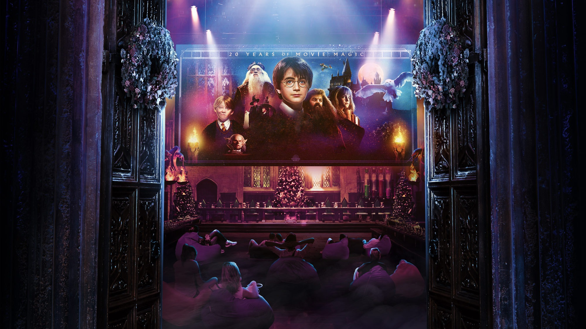
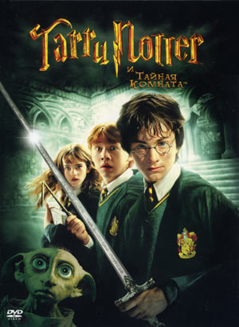
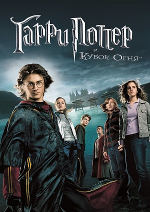
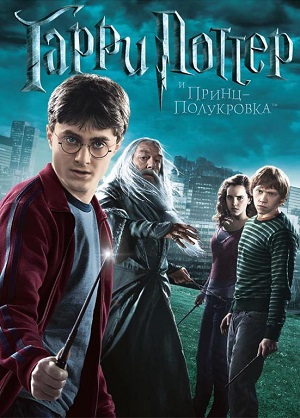
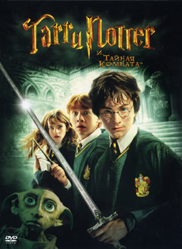
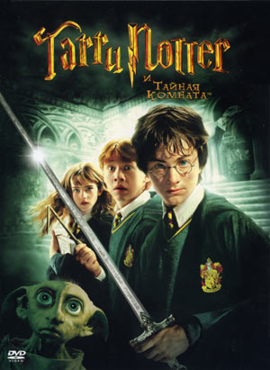
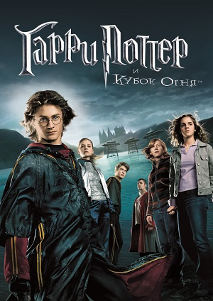
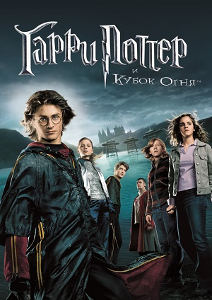
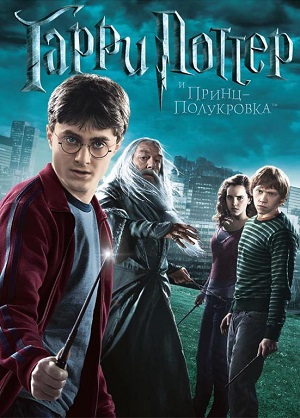
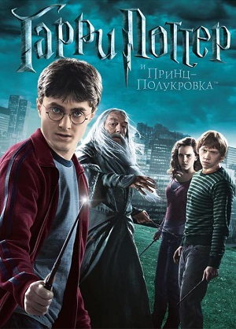

Серія про Гаррі Поттера - серія фільмів, заснованих на книгах про Гаррі Поттера англійської письменниці Дж. К. Роулінг.
Серія випущена компанією Warner Bros. І складається з десяти фільмів в жанрі фентезі, включаючи основну серію - починаючи з «Гаррі Поттер і Філософський Камінь» (2001)
і закінчуючи «Гаррі Поттер і Дари Смерті: Частина 2» (2011) - а також спін-офф «Фантастичні звірі і де їх шукати» (2016) і його сиквела «Фантастичні звірі: Злочини Грін-де-Вальда» (2018).
У 2022 році очікується вихід тріквела «Фантастичних звірів»
Серія фільмів спродюсована Девідом Хейманом, а Деніел Редкліфф, Руперт Грінт і Емма Уотсон зіграли ролі трьох головних героїв: Гаррі Поттера, Рона Візлі і
Герміони Грейнджер. Над серією працювали 4 режисера: Кріс Коламбус, Альфонсо Куарон, Майк Ньюелл і Девід Йейтс. Франшиза займає 3-е місце в списку найбільш прибуткових серій фільмів
з 9,2 млрд $ світового прибутку.

Екранізації
Серія романів про Гаррі Поттера була екранізована в наступних фільмах:
Гаррі Поттер і Філософський камінь — 2001 рік.
Гаррі Поттер і Таємна кімната — 2002 рік.
Гаррі Поттер і В'язень Азкабану — 2004 рік.
Гаррі Поттер і Келих вогню — 2005 рік.
Гаррі Поттер і Орден Фенікса — 2007 рік.
Гаррі Поттер і Напівкровний Принц — 2009 рік.
Гаррі Поттер і Смертельні реліквії: Частина 1 — 2010 рік.
Гаррі Поттер і Смертельні реліквії: Частина 2 — 2011 рік.



Музика
Джон Вільямс створював музику для перших трьох фільмів та отримав номінацію на премію «Оскар» за перший і третій фільм.
Серія фільмів про «хлопця, який вижив» мала чотирьох композиторів. Джон Вільямс: перші три фільми: Філософський камінь, Таємна кімната та в'язень Азкабану. Проте, другий фільм був
адаптований та виконаний Біллі Россом через конфліктні зобов'язання Вільямса.
Після того, як Вільямс залишив серію для проведення інших проєктів, Патрік Дойл створив композиції для четвертого фільму, яким керував Майк Ньюел, з яким Дойл працював раніше. У
2006 році Ніколас Гупер почав працювати над 5 фільмом під керівництвом режисера Девіда Єйтса. Гупер також склав саундтрек до шостого фільму, але вирішив не повертатись до фінальних фільмів.
У січні 2010 року Александр Деспла був затверджений композитором фільму Гаррі Поттер та Смертельні реліквії. Частина 1. Оркестрування фільму розпочалося влітку разом з Конрадом Папою,
оркестратором на перших трьох фільмах про Гаррі Поттера, що співпрацював з Деспла. Деспла повернувся, щоб закінчити серію композицій до останнього фільму Гаррі Поттер та Смертельні реліквії.
Частина 2. у 2011 році.
Режисер Девід Єйтс заявив, що хоче, щоб Джон Вільямс повернувся до серії для остаточного внеску, але їх графіки не збіглися через невідкладний попит на композитора. Остання сесія запису Гаррі
Поттера відбулася 27 травня 2011 року на студії Abbey Road з Лондонським симфонічним оркестром, оркестратором Конрадом Папою та композитором Александром Деспла.
Дойл, Гупер і Деспла представили власні особисті теми на свої звукові доріжки, зберігаючи кілька тем Джона Вільямса.
Jacksonville Symphony представляє «Harry Potter and the Sorcerer’s Stone™ – In Concert» із живим оркестром.
 

 

 
